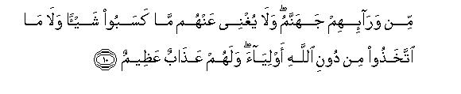
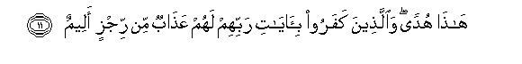

Sacred Texts Islam Index
Hypertext Qur'an Unicode Palmer Pickthall Yusuf Ali English Rodwell
Sūra XLV.: Ja<u>th</u>iya, or Bowing the Knee. Index
Previous Next

The Holy Quran, tr. by Yusuf Ali, [1934], at sacred-texts.com
Sūra XLV.: Jathiya, or Bowing the Knee.
Section 1
1. Hā-Mīm.
2. Tanzeelu alkitabi mina Allahi alAAazeezi alhakeemi
2. The revelation
Of the Book
Is from God
The Exalted in Power,
Full of Wisdom.
3. Inna fee alssamawati waal-ardi laayatin lilmu/mineena
3. Verily in the heavens
And the earth, are Signs
For those who believe.
4. Wafee khalqikum wama yabuththu min dabbatin ayatun liqawmin yooqinoona
4. And in the creation
Of yourselves and the fact
That animals are scattered
(Through the earth), are Signs
For those of assured Faith.
5. Waikhtilafi allayli waalnnahari wama anzala Allahu mina alssama-i min rizqin faahya bihi al-arda baAAda mawtiha watasreefi alrriyahi ayatun liqawmin yaAAqiloona
5. And in the alternation
Of Night and Day,
And the fact that God
Sends down Sustenance from
The sky, and revives therewith
The earth after its death,
And in the change
Of the winds,—are Signs
For those that are wise.
6. Tilka ayatu Allahi natlooha AAalayka bialhaqqi fabi-ayyi hadeethin baAAda Allahi waayatihi yu/minoona
6. Such are the Signs
Of God, which We rehearse to thee
In truth: then in what
Exposition will they believe
After (rejecting) God
And His Signs?
7. Waylun likulli affakin atheemin
7. Woe to each sinful
Dealer in Falsehoods:
8. YasmaAAu ayati Allahi tutla AAalayhi thumma yusirru mustakbiran kaan lam yasmaAAha fabashshirhu biAAathabin aleemin
8. He hears the Signs
Of God rehearsed to him,
Yet is obstinate and lofty,
As if he had not
Heard them: then announce
To him a Penalty Grievous!
9. Wa-itha AAalima min ayatina shay-an ittakhathaha huzuwan ola-ika lahum AAathabun muheenun
9. And when he learns
Something of Our Signs,
He takes them in jest:
For such there will be
A humiliating Penalty.

10. Min wara-ihim jahannamu wala yughnee AAanhum ma kasaboo shay-an wala ma ittakhathoo min dooni Allahi awliyaa walahum AAathabun AAatheemun
10. In front of them is
Hell: and of no profit
To them is anything
They may have earned,
Nor any protectors they
May have taken to themselves
Besides God: for them
Is a tremendous Penalty.

11. Hatha hudan waallatheena kafaroo bi-ayati rabbihim lahum AAathabun min rijzin aleemin
11. This is (true) Guidance:
And for those who reject
The Signs of their Lord,
Is a grievous Penalty
Of abomination.